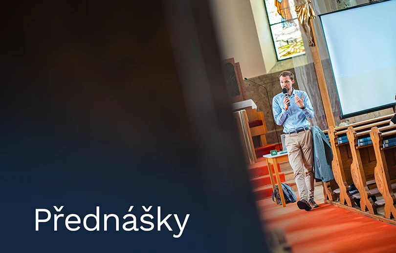
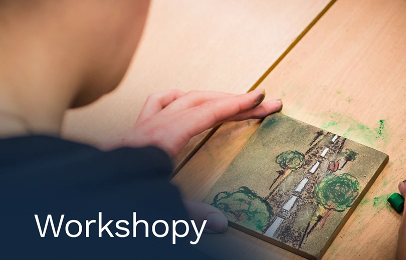
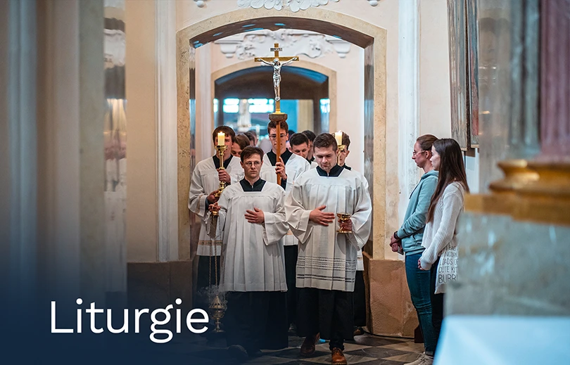
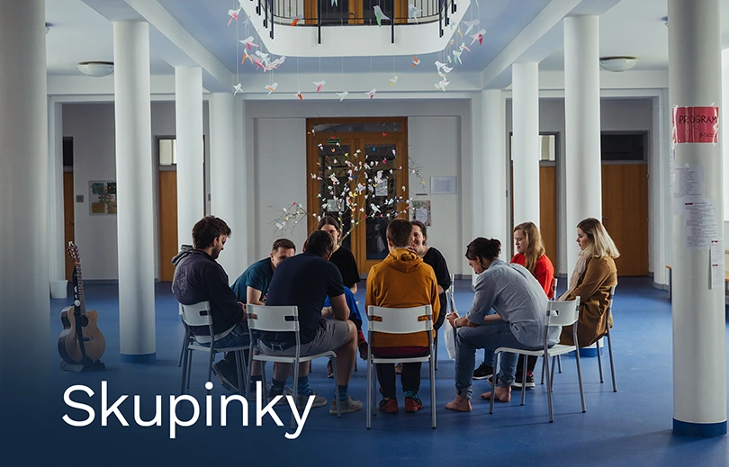
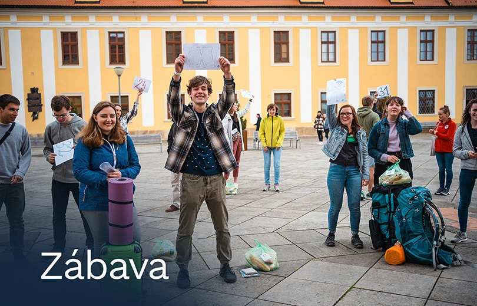
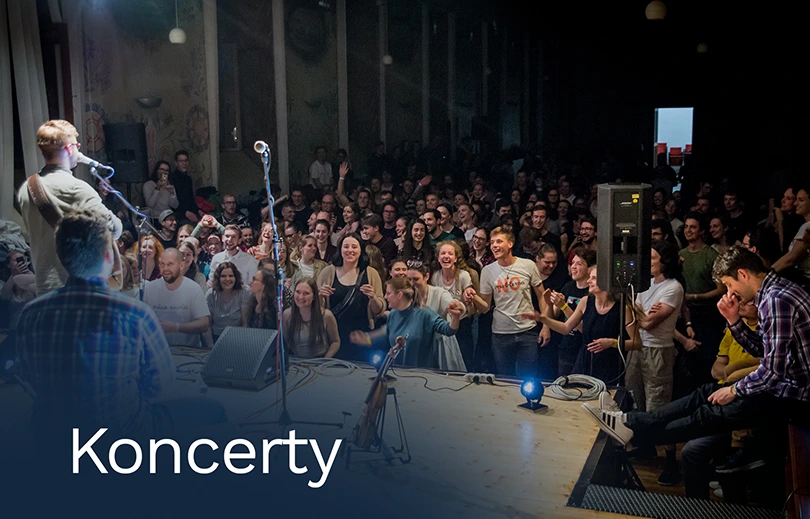

Studentský Velehrad 2026
Celostátní setkání věřících vysokoškoláků a mladých pracujících
30. dubna – 3. května 2026
O akci
Studentský Velehrad je setkání pro věřící vysokoškoláky a mladé pracující. Akce probíhá každé 2 roky na poutním místě Velehrad a na její organizaci se podílí tým dobrovolníků složený ze studentů i pracujících. Letos se koná už 10. ročník.
Pro několik stovek účastníků je připraven bohatý program, který nabízí jedinečnou příležitost vytvářet společenství s vrstevníky, diskutovat o mezilidských vztazích, víře a jejím prožívání, povolání i každodenním životě.
Téma SV26: Je čas
„Všechno má určenou chvíli a veškeré dění pod nebem svůj čas.“ (Kazatel 3,1–8)
Žijeme v době, která nás nutí neustále běžet. Stíhat termíny, zkoušky, práci a k tomu naplňovat očekávání druhých. Máme pocit, že nám čas protéká mezi prsty. Ale Bible nám připomíná, že čas není náš nepřítel. Je to dar.
Letošní Studentský Velehrad nese téma „Je čas“. Možná je čas přestat se hnát. Je čas se zastavit. Je čas mlčet a naslouchat. Je čas hledat a je čas nacházet. Je čas bořit staré zdi a stavět nové mosty. Na Velehradě chceme společně hledat odpovědi na to, pro co právě teď nastal čas v našem životě.
Bůh učinil všechno krásné v pravý čas. Je čas to objevit.
Na co se můžete těšit?






Je čas se přihlásit!
Kapacita ubytování na Velehradě není neomezená. Zajisti si své místo hned teď. Registrace zde.
Kdo za tím stojí
Akci pořádá Vysokoškolské katolické hnutí ČR ve spolupráci s jednotlivými místními organizacemi.